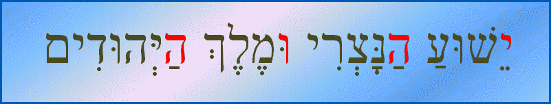
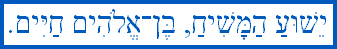

V�TEJTE VITAJTE
WITAJCIE WELCOME
V�LKOMMEN KHOSH �MAD�D
BRUCHIM HABAYIM BENVENUTO
liborsen@quick.cz
JESUS IS THE LORD, THE SON OF THE LIVING GOD
JE�͊ JE P�N, SYN BOHA �IV�HO
YESHUA
ADONAI, BEN-ELOHIM CHAYYIM
IS�
XOD�VAND AST, FARZAND E XOD� YE ZENDE
VYBRAN�
ODKAZY NA M� VLASTN� STR�NKY
FREE DICTIONARIES
CZECHIA

THE HOLIEST NAME OF
GOD
THE GOSPEL OF JOHN
3,16 IN MANY VARIOUS LANGUAGES
THE LORD'S PRAYER
IN SLAVIC LANGUAGES

THE LORD'S PRAYER
IN MY MOST FAVOURITE LANGUAGES
POETRY: EXTRACT
FROM THE FIRST WORK OF LIBOR - 5 PRAYERS
INTERNATIONAL
CONSTRUCTED LANGUAGE EURANSI
EURANSI-ENGLISH-CZECH
WORD LIST
DIALECTS OF
EURANSI: DARSENI, JOH�NSI, MASNAVI, MEZDEVI, SANSARI
OLDER VERSION OF
EURANSI
ROMANY-ENGLISH-CZECH-EURANSI
WORD LIST
FREE DOWNLOADABLE
TRUE TYPE FONTS
ROMAN ALPHABETS
GRAPHEMES AND IPA
PHONEMES
INFORMATION ABOUT
VARIOUS LATIN DIACRITICS
PHONETICS: CZECH
LANGUAGE
TESHEN SILESIAN
DIALECT
COUNTRIES &
THEIR OFFICIAL LANGUAGES
CZECH BUSES'
GALLERY
F�RSI GRAMMAR IN
BRIEF
CZECH-PERSIAN WORD
LIST - 4000 ENTRIES
SHORT COMPARATIVE
PERSIAN-CZECH-ENGLISH WORD LIST
ROMAN ALPHABET FOR
TAJIK - SAMPLES
SHORT TAJIK-CZECH
WORD LIST
SHORT
ISHKASHMI-CZECH WORD LIST
NORTH SLAVIC
CONLANG SLAV�NI
NORTH SLAVIC
CONSTRUCTED LANGUAGE LYDNEVI
NORTH SLAVIC
CONLANG SLAVISK
LIBOR SZTEMON'S
CONSTRUCTED LANGUAGES LIST
NORTH SLAVIC
CONLANG SEVERSK
INTERNATIONAL
CONLANG DARSENI
INDO-IRANIAN
CONSTRUCTED LANGUAGE PEYRAVI
CONSTRUCTED
LANGUAGE M�SRAVI
THIS
IS MY NATIVE TOWN

� 2001 Libor Sztemon, Czechia